I greet you this day,
First: read the story. I tell stories too 🙂 Second: read the notes. Third: view the videos. Fourth: solve the questions/solved examples. Fifth: check your solutions with my thoroughly-explained solutions. Sixth: check your answers with the calculators as applicable.
Comments, ideas, areas of improvement, questions, and constructive criticisms are welcome. You may
contact me.
If you are my student, please do not contact me here. Contact me via the school's system.
Thank you for visiting.
Samuel Dominic Chukwuemeka (SamDom For Peace) B.Eng., A.A.T, M.Ed., M.S
Virologist:
It is a virus.
It is highly contagious.
It is spreading so fast.
Mathematician:
GOD help us!
How fast is it spreading?
Statistician:
On the first day (Day 1), two people contacted it.
On the second day (Day 2), four people contacted it.
On the third day (Day 3), nine people contacted it.
On the fourth day (Day 4), sixteen people were affected.
On the fifth day (Day 5), twenty five people were affected.
On the sixth day (Day 6), thirty six people were affected.
On the seventh day, (Day 7), forty nine people tested positive for the virus.
Teacher: If this trend continues, how many people are likely to be infected on the ninth day?
What type of function does this scenario represent?
What is the graph of that function called?
On the ninth day, 81 people are likely to be infected.
This represents a Quadratic function.
The graph of a quadratic function is called a parabola.
Can we represent this information in a table?
Day, $x$
Number of People, $y$
$y = x^2$
$1$
$1$
$2$
$4$
$3$
$9$
$4$
$16$
$5$
$25$
$6$
$36$
$7$
$49$
Social Worker:
Wait a minute!
We have an updated report.
Here it is:
On the first day (Day 1), two people contacted it.
On the second day (Day 2), four people contacted it.
On the third day (Day 3), eight people contacted it.
On the fourth day (Day 4), sixteen people were affected.
On the fifth day (Day 5), thirty two people were affected.
On the sixth day (Day 6), sixty four people were affected.
On the seventh day, (Day 7), one hundred and twenty eight people tested positive for the virus.
Teacher: If this trend continues, how many people are likely to be infected on the ninth day?
What type of function does this scenario represent?
On the ninth day (Day 9), 512 people are likely to be infected.
This represents an Exponential function.
Can we represent this updated information in a table?
Day, $x$
Number of People, $y$
$y = 2^x$
$1$
$2$
$2$
$4$
$3$
$8$
$4$
$16$
$5$
$32$
$6$
$64$
$7$
$128$
Teacher: Do you see the difference between a Quadratic Function and an Exponential
Function?
Do you see the difference between $x^2$ and $2^x$?
Let us see a visual explanation of these functions
Ask students to compare and contrast the two functions based on their graphs.
Note their responses.
Ask them to mention some life scenarios of Exponential Growth: increasing at a fast rate and
Exponential Decay: decreasing at a fast rate"?
Our focus is on Exponential Functions and Logarithmic Functions
Let us attempt another question based on this story.
Teacher: If this trend continues, on what day will about four thousand and ninety six people be
infected?
What type of function does this scenario represent?
About 4096 people would be infected on the 12th day
This represents a Logarithmic function.
How did we get that answer?
$
\underline{Exponential\;\;Function} \\[3ex]
y = 2^x \\[3ex]
x = input \\[3ex]
y = output \\[5ex]
\underline{Logarithmic\;\;Function} \\[3ex]
\log_{2}{y} = x \\[3ex]
y = input \\[3ex]
x = output \\[5ex]
\log_{2}{4096} = \log_{2}{2^{12}} = 12\log_{2}{2} = 12 * 1 = 12 \\[3ex]
$
Based on this, we see that $x$ and $y$ are inverses of each other.
This implies that Exponential Functions and Logarithmic Functions are inverses of each other.
Let us represent all these information on a table so we can see the relationship between Exponents and
Logarithms.
Day, $x$
Number of People, $y$
$y = 2^x$
Number of People, $y$
Day, $x$
$\log_{2}{y} = x$
$1$
$2$
$2$
$1$
$2$
$4$
$4$
$2$
$3$
$8$
$8$
$3$
$4$
$16$
$16$
$4$
$5$
$32$
$32$
$5$
$6$
$64$
$64$
$6$
$7$
$128$
$128$
$7$
Practice! Practice!! Practice!!! Given: an exponential function Write: the logarithmic function
Similary Given: a logarithmic function Write: the exponential function
Let us see a visual explanation of these functions
$
Exponential\;\;Function:\;\;y = 2^x \\[3ex]
Logarithmic\;\;Function:\;\;y = \log_2{x} \\[5ex]
Exponential\;\;Function:\;\;(0, 1) \\[3ex]
2^0 = 1 \\[3ex]
Logarithmic\;\;Function:\;\; (1, 0) \\[3ex]
\log_{2}{1} = 0 \\[5ex]
Exponential\;\;Function:\;\;(1, 2) \\[3ex]
2^1 = 2 \\[3ex]
Logarithmic\;\;Function:\;\; (2, 1) \\[3ex]
\log_{2}{2} = 1 \\[5ex]
Exponential\;\;Function:\;\;(2, 4) \\[3ex]
2^2 = 4 \\[3ex]
Logarithmic\;\;Function:\;\; (4, 2) \\[3ex]
\log_{2}{4} = 2 \\[5ex]
$
Review: Composition of Functions and Inverse Functions.
Ask students to compare and contrast the two functions based on their graphs.
Note their responses.
Ask students to verify that both functions are inverses of each other.
In other words, Test for Inverses
(1.) Discuss exponents.
(2.) Discuss logarithms.
(3.) Discuss the relationship between exponents and logarithms.
(4.) Discuss the relationship between the laws of exponents and the laws of logarithms.
(5.) Simplify exponential expressions.
(6.) Solve exponential equations.
(7.) Check the solution(s) of exponential equations.
(8.) Determine the logarithms of terms without a calculator.
(9.) Simplify logarithmic expressions.
(10.) Expand logarithmic expressions.
(11.) Condense logarithmic expressions.
(12.) Solve logarithmic equations.
(13.) Check the solution(s) of logarithmic equations.
(14.) Discuss exponential functions.
(15.) Graph exponential functions.
(16.) Analyze the graph of exponential functions.
(17.) Graph exponential functions using transformations.
(18.) Discuss logarithmic functions.
(19.) Graph logarithmic functions.
(20.) Analyze the graph of logarithmic functions.
(21.) Graph logarithmic functions using transformations.
(22.) Discuss exponential functions and logarithmic functions as inverses of each other.
(23.) Solve applied problems involving Exponential Growth.
(24.) Solve applied problems involving Exponential Decay.
(25.) Solve applied problems involving Mathematics of Finance.
(26.) Solve applied problems in Chemistry involving pH and pOH.
(27.) Solve other applications in several disciplines.
Vocabulary Words
Ask students to suggest possible vocabulary words for this topic.
Given: A Table of Values of Data (the values of the independent variable and the values of the
dependent variable) To Determine: The kind of function (model) the Data represents.
We can do so:
(1.) Graphically and/or
(2.) Algebraically
NOTE:The first and most important step is to graph the data.
When you graph the data, you can see the behavior of the graph.
Seeing the behavior of the graph helps in identifying the function represented by the graph.
So, it is very important to graph the data.
Besides Graphing the data:
If we are given a table of values of data, how can we tell what kind of function is represented by the data?
In other words, how can we algebra to model what kind of function represented by a table of values of data?
Does the data represent:
a linear function?
a quadratic function?
an exponential function?
a logarithmic function?
a logistic function?
Let us first: Review: Linear Function and Quadratic Function
Linear Function
General Form: $y = mx + b$
This is also known as a Linear Sequence or an Arithmetic Sequence or an Arithmetic
Progression
Review the values of the dependent variable: the y-values
If the first difference between two consecutive terms is the same (common first difference between
two consecutive terms),
then the data represents a linear function.
General Form: $y = ax^2 + bx + c$
This is also known as a Quadratic Sequence
Review the values of the dependent variable: the y-values
If the second difference between two consecutive terms of the first difference is the same
(common second difference between two consecutive terms of the first difference), then the data represents a
quadratic function.
For Exponential Functions, Logarithmic Functions, and Logistic Functions
To identify if a dataset represents an exponential function, logarithmic function, or logistic function:
(1.) Graph the data.
This is the most important approach.
When you graph the data, you see the behavior of the graph.
Seeing the behavior of the graph helps in identifying the function represented by the graph.
So, it is very important to graph the data.
(2.) Algebraically examine the data.
Exponential Function
General Form: $y = p^x$ or $y = ap^x$
This is also known as a Geometric Sequence or an Exponential Sequence or a Geometric
Progression
Review the values of the dependent variable: the y-values
If the ratio between two consecutive terms is the same (common ratio between two consecutive terms),
then the data
represents an exponential function.
Question:NYSED Perry invested in property that cost him $1500
Five years later, it was worth $3000, and 10 years from his original purchase, it was worth
$6000.
Assuming the growth rate remains the same, which type of function could he create to find the value of his
investment 30 years
from his original purchase?
(1) exponential function (3) quadratic function
(2) linear function (4) trigonometric function
First: Let us represent this information in a table.
$x$, Year (what year?)
$y$, cost ($)
$1$ (Year 1)
$1500$
$6$ (5 years later = 5 + 1 = Year 6)
$3000$
$11$ (10 years from year 1 = 10 + 1 = Year 11)
$6000$
$31$ (30 years from year 1 = 30 + 1 = Year 31)
$?$
$
Try\;\;Exponential\;\;Function \\[3ex]
\underline{Ratio\;\;between\;\;consecutive\;\;terms} \\[3ex]
\dfrac{2nd}{1st} = \dfrac{3000}{1500} = 2 \\[5ex]
\dfrac{3rd}{2nd} = \dfrac{6000}{3000} = 2 \\[5ex]
common\;\;ratio = 2 \\[3ex]
\implies Exponential\;\;Function \\[3ex]
$
This is the correct answer.
We can stop here.
But, let's try other options.
General Form for Logarithmic Function: $y = \log_{p}x$
General Form for Logarithmic Model: $y = c + m\ln x$
For a Logarithmic Function:
(1.) Graph the Table of Values.
The graph displays a very rapid growth, followed by slower growth
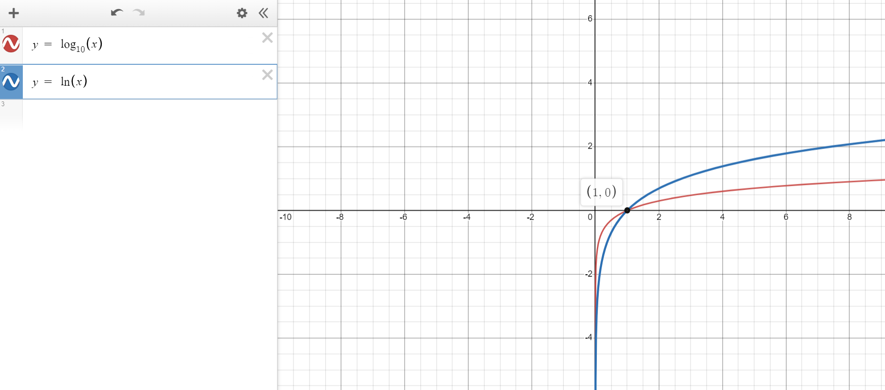
Also; as observed from the graph, the natural logarithm (base e) grows faster than the common
logarithm (base 10)
(2.) Review the values of the independent variable: the x-values
If the ratio between two consecutive terms is the same (common ratio between two consecutive terms),
then the data
probably represents a logarithmic function.
Exponent tells us how many times to multiply the base by itself.
The Logarithm of a term, to a base, is the power(or index or exponent) to which the base must be
raised to give
the term.
An exponential expression is an expression containing exponents and/or exponential functions.
Typically, we solve exponential expressions using the Laws of Exponents.
An exponential equation is an equation containing exponents and/or exponential functions.
Typically, we solve exponential equations using the Laws of Exponents.
A logarithmic expression is an expression containing logarithms.
Typically, we solve logarithmic expressions using the Laws of Logarithms.
A logarithmic equation is an equation containing logarithms.
Typically, we solve logarithmic equations using the Laws of Logarithms.
Reasons for Studying Exponents and Logarithms
Some common questions often asked by students:
Why am I learning this?
What am I going to do with this?
How is this applicable to my major?
Do I need this to become ... (your profession)?
Of what use is this to me?
These are all good questions!
Let us begin by asking them this question. (Answering Questions with Questions? - yes, that's right)
Typical of Nigerians 😊😊😊
Guess what though? You do not get into trouble by answering questions with questions.
Okay, back to this question.
Exponents and Logarithms lead to Exponential Functions and Logarithmic Functions
Some of the notable applications in various field/disciplines of life include:
Applications of Exponential Functions
(1.)
Exponential Growth (Word Problems: Part
1)
Some examples are seen in:
Population growth: Majors in Family Studies, etc.
Continuous Compound Interest - Majors in Finance, Business, Accountancy, etc.
Epidemiology, Virology, Bacteriology, - Majors in Health Science, Medicine, Nursing, etc.
(2.)
Exponential Decay (Word Problems: Part
2)
Some examples are seen in:
Radioactivity: Majors in Nuclear Physics, Nuclear Chemistry, etc.
Drug Effects - Majors in Pharmacy etc.
(3.)
Mathematics of
Finance (Word Problems: Part 3)
Some examples are seen in:
Compound Interest, Annual Percentage Yield (APY), Annuities, Amortizations, Sinking Funds, etc.:
Majors in Finance, Business, Accountancy, etc.
Applications of Logarithmic Functions
(1.)
Some examples are seen in:
pH and pOH (Acidity and Alkalinity of solutions): Majors in Chemistry, Soil Science, Plant/Crop Science,
Agricultural Science,
Science Lab Technology, etc.
(2.)
Some examples are seen in:
Ritcher scale: Measurement of earthquakes: Majors in Geology, Geosciences, Meteorology, Physics, etc.
(3.)
Sound Intensity
(Question 1)
Some examples are seen in:
Noise control, Sound power, etc.
$
2^4 = 16 \\[3ex]
base = 2 \\[3ex]
exponent = 4 \\[3ex]
result = 16 \\[3ex]
$
As you see, every exponent has a base.
The exponent, $4$ tells you to multiply the base, $2$; four times.
The exponent tells you how many times to multiply the base.
Logarithm
$
\log_2{16} = 4 \\[3ex]
base = 2 \\[3ex]
logarithm = 16 \\[3ex]
result = 4 \\[3ex]
$
Ask students if they see any relationship.
Ask students to compare Exponents and Logarithms
Ask students to contrast Exponents and Logarithms
As you see, every logarithm also has a base.
The base, 2 you saw in Exponent is still the base, 2 you see in Logarithm.
The result, 16 you see in Exponent is the logarithm, 16 you see in Logarithm.
The exponent, 4 you see in Exponent is the result, 4 you see in Logarithm.
Every Logarithm has a base.
The base of the logarithm is always written as a subscript.
The base of a logarithm can be written numerically (in numbers) or in words.
For example: $\log_2{16} = \log_{two}{16}$
If the base is not specified, that means the logarithm is in base $10$
For example: $\log{100} = \log_{10}{100} = \log_{ten}{100}$
We have two main types of Logarithms
(1.) Common Logarithm: This is the logarithm to base ten.
An example is $\log_{10}{100}$
(2.) Natural or Napierian Logarithm: This is the logarithm to base $e$.
An example is $\log_e{100}$
$\log_e{100}$ can also be written as $\ln{100}$
$\log_e{x}$ can also be written as $\ln{x}$
where $e$ is known as the Euler Number or Napier's constant.
Students may ask the meaning of $e$.
Using a scientific/graphing calculator, show the students the value of $e$
They may also ask the meaning of $\ln$. Please be sure to pronounce it well for them.
For the very curious students, please direct them to
Continuous Compound Interest so they understand how the value of $e$ was found.
Back to our discussion for those two cases regarding Exponents and Logarithms, the base is the same.
Let us explain this in another perspective.
Can we use the terms, input and output?
Ask students again if they see any relationship(s). Note their responses. Provide feedback.
Wait a minute!
There is a contradiction here.
We just cannot have two different bases giving us the same result of the logarithm of the same number.
Why is that? 😊😊😊 (Speaking like an American lol)
Calm down. Let us look at further examples. Then, it will make sense.
Remember: we are only dealing with real numbers. We are not interested in complex numbers.
$
4^{\dfrac{1}{2}} = 2 \\[5ex]
\log_4{2} = \dfrac{1}{2} \\[5ex]
(-4)^{\dfrac{1}{2}} = \sqrt{-4} = 2i \\[5ex]
$
This is not a real number
***$\log_{-4}{2}$*** will not work for real numbers.
Do you see why we cannot have negative bases?
So, please note: For Exponents
(1.) Base can be positive, zero, or negative
(2.) Exponent can be positive, zero, or negative.
(3.) Result can be positive, zero, or negative.
For Logarithms
(1.) Base can only be positive
(2.) Number can only be positive.
(3.) Result can be positive, zero, or negative.
You may ask students these questions after you cover the Laws of Exponents and Laws of Logarithms
Determine the value:
$
(a.)\;\; 0^5 \\[3ex]
(b.)\;\; (-2)^0 \\[3ex]
(c.)\;\; 2^0 \\[3ex]
(d.)\;\; 0^0 \\[3ex]
$
Based on Exponents and Logarithms and/or mathematical reasoning, ask students to explain
the
last question: zero raised to exponent zero
Ask students to prove Law 7 of Logarithms based on the relationship between exponents and
logarithms.
Can we write these laws in English Language?
Laws of Exponents
Law 1:
If two or more expressions have: the same base, and are being multiplied;
Keep the base
Add the exponents.
Law 2:
If two expressions have: the same base, and are being divided;
Keep the base
Subtract the exponents.
Subtracting the exponents means subtract the exponent of the denominator from the exponent of the
numerator.
Law 3:
Any base raised to an exponent of $0$ gives a result of $1$
In other words, the result of any base raised to an exponent of 0, is 1
Law 4:
Any base raised to an exponent of $1$ is that base.
In other words, the result of any base raised to an exponent of 1, is that base.
Law 5:
If an expression, having one base enclosed in parenthesis, has two exponents: an inner exponent
and an outer exponent;
Keep the base
Multiply the exponents.
If an expression, having a product of multiple bases enclosed in parenthesis, has two exponents: an inner
exponent
and an outer exponent;
Keep each base as a product
Multiply the exponents.
Law 6:
A base with a negative exponent is the reciprocal of the same base with the corresponding positive exponent.
A base with a positive exponent is the reciprocal of the same base with the corresponding negative exponent.
Law 7:
Fractional exponents leads to radicals.
In other words, a base whose exponent is a fraction can be expressed as a radical.
Laws of Logarithms
Law 1:
If two logarithms have: the same base, and are being added;
Keep the base
Multiply the numbers.
Law 2:
If two logarithms have: the same base, and are being subtracted;
Keep the base
Divide the numbers.
Law 3:
The logarithm of the number, $1$; to any base gives a result of $0$
In other words, the result of the logarithm of $1$; to any base is $0$
Law 4:
The logarithm of a number; to that number as the base, gives a result of $1$
In other words, the result of the logarithm of a number to that same number as the base is $1$
Law 5:
The logarithm of a number to a base, raised to an exponent; is equal to the exponent times the logarithm of that
number to the base.
Law 6:
This Law deals with the Change of Base of Logarithms.
Any logarithm of a number to a base, can be expressed as a ratio of two logarithms to another base.
Say you have the logarithm of a number say $d$ to a base, say $p$; and
You want to change the base of that logarithm to another base, say $c$; then the
logarithm of $d$ to base $p$ is the logarithm of $d$ to base $c$ divided by the logarithm of $p$ to base $c$.
In other words, the logarithm of $d$ to base $p$ is the ratio of the logarithm of $d$ to base $c$, to the
logarithm of $p$ to base $c$
Law 7:
This Law actually deals with both exponents and logarithms.
The result of a base, raised to an exponent of the logarithm of a number whose base is the base, is the number.
An Exponential Function is a function of the form: $f(x) = p^x$ where:
$f(x)$ is the $y$: the dependent variable. It is a function of $x$
$x$ is the independent variable
$p$ is the base. It is a positive real number. This implies that $p \gt 0$
Some textbooks and online resources may write an exponential function as: $y = ab^x$
In that case:
$a$ = initial value
$b$ is the base
I prefer to use $p$ rather than $b$ as a matter of choice. I do not want anyone to mistake $b$ for $6$,
hence I prefer
$p$
Use whatever variable you prefer but please define what you use.
Typically, we have two basic cases of exponential functions.
All other exponential functions can be plotted by transforming the graphs of any of these two basic cases as
applicable.
The two basic cases are:
(1.) Case 1: the base is greater than 1. $p \gt 1$
(2.) Case 2: the base is between 0 and 1 (both ends excluded). $0 \lt p \lt 1$
We have a special example of Case 1: where the base is the Euler number (also known as Napier's constant):
e
$
y = e^x \\[3ex]
where\;\;e \approx 2.718 \\[3ex]
$
Recall the Mathematics of Finance: Continuous Compound Interst when we derived the Euler number.
To draw the graph of any exponential function, we can:
(1.) Draw the Table of Values of the appropriate basic case and
Transform the graph of that basic case to the exponential function
(2.) Draw the Table of Values of the exponential function
(3.) Use a graphing calculator/software
Ask students to explain what would happen to the exponential function if:
(1.) the base is zero: $p = 0$
(2.) the base is one: $p = 1$
(3.) the base is negative: $p \lt 0$
Case 1:Base is greater than 1
Let us discuss some properties of the basic type of exponential function where the base is greater than 1.
Let us review the graphs of three functions:
$
y = 2^x \\[3ex]
y = 3^x \\[3ex]
y = 4^x \\[3ex]
$
Ask students to write the Table of Values for each of the functions.
We already did the Table of Values for the first function in the Story (beginning of this topic)
The graphs of the functions are: (Notice the color represented by each graph)
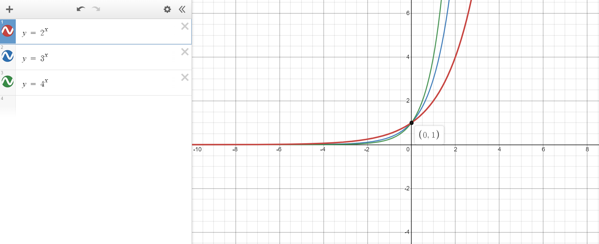
Properties of Exponential Functions (Case 1: Base is greater than 1)
(1.) Type of Function: One-to-one function: every input has a different output. Ask students to verify by reviewing the Table of Values for each function.
(2.) y-intercept: The y-intercept is (0, 1)
This is seen on the graph. It applies to all exponential functions where the base is greater than 1.
(3.) x-intercept: There is no x-intercept. Note: The x-intercept is not zero. There is simply no x-intercept. It DNE (does not exist).
(4.) Domain: Set Notation: $D = \{x | x \in \mathbb{R}\}$
Interval Notation: $(-\infty, \infty)$
The domain is the set of all real numbers.
(5.) Range: Set Notation: $R = \{y | y \gt 0\}$
Interval Notation: $(0, \infty)$
The range is the set of real numbers greater than zero.
(6.) Behavior of the Graph: The graph is increasing from left to right.
In other words, the graph is increasing in the domain from $(-\infty, \infty)$
(7.) End Behavior of the Graph:
On the Right: As $x \rightarrow \infty$, $y \rightarrow \infty$
On the Left: As $x \rightarrow -\infty$, $y \rightarrow 0$ Note: On the Left: y is not equal to zero. It just approaches zero.
Based on the Left, this implies that:
(8.) Horizontal Asymptote: $y = 0$
This is because the graph approaches the x-axis as the input decreases without bound.
In other words, the graph is asymptotic to the x-axis (the line $y = 0$) Ask students to verify by reviewing the Table of Values for each function for the negative values of
$x$.
(9.) Continuity: The graph is continuous.
No gaps, no holes, no breaks.
Case 2:Base is between 0 and 1 (Both ends not included)
Let us discuss some properties of the basic type of exponential function where the base is between 0 and 1
(both ends are excluded).
Let us review the graphs of three functions:
$
y = \left(\dfrac{1}{2}\right)^x \\[5ex]
y = \left(\dfrac{1}{3}\right)^x \\[5ex]
y = \left(\dfrac{1}{4}\right)^x \\[5ex]
$
Ask students to write the Table of Values for each of the functions.
We already did the Table of Values for the first function in the Story (beginning of this topic)
The graphs of the functions are: (Notice the color represented by each graph)
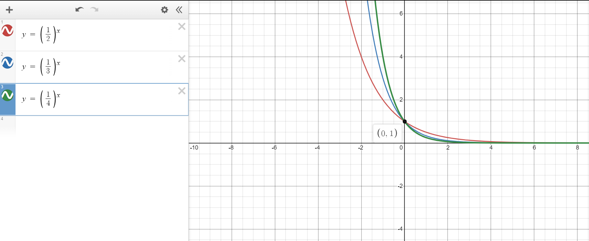
Properties of Exponential Functions (Case 2: Base is between 0 and 1) (Both ends excluded)
(1.) Type of Function: One-to-one function: every input has a different output. Ask students to verify by reviewing the Table of Values for each function.
(2.) y-intercept: The y-intercept is (0, 1)
This is seen on the graph. It applies to all exponential functions where the base is between 0 and 1.
(3.) x-intercept: There is no x-intercept. Note: The x-intercept is not zero. There is simply no x-intercept. It DNE (does not exist).
(4.) Domain: Set Notation: $D = \{x | x \in \mathbb{R}\}$
Interval Notation: $(-\infty, \infty)$
The domain is the set of all real numbers.
(5.) Range: Set Notation: $R = \{y | y \gt 0\}$
Interval Notation: $(0, \infty)$
The range is the set of real numbers greater than zero.
(6.) Behavior of the Graph: The graph is decreasing from left to right.
In other words, the graph is decreasing in the domain from $(-\infty, \infty)$
(7.) End Behavior of the Graph:
On the Right: As $x \rightarrow \infty$, $y \rightarrow 0$ Note: On the Right: y is not equal to zero. It just approaches zero.
On the Left: As $x \rightarrow -\infty$, $y \rightarrow \infty$
Based on the Right, this implies that:
(8.) Horizontal Asymptote: $y = 0$
This is because the graph approaches the x-axis as the input increases without bound.
In other words, the graph is asymptotic to the x-axis (the line $y = 0$) Ask students to verify by reviewing the Table of Values for each function for the positive values of
$x$.
(9.) Continuity: The graph is continuous.
No gaps, no holes, no breaks.
Getting everything together (as a combo):
Ask students to compare and contrast the two cases.
An Exponential Model is a model of the form: $y = ap^x$ where:
$y$ is the dependent variable. It is a function of $x$
$x$ is the independent variable
$p$ is the base. It is a positive real number.
Given two sets of data that is related exponentially (similar to the data in the Story), how do we write the
exponential
function for the datasets?
In other words, how do we develop an exponential model for the datasets?
Given: Datasets X and Y (the data for the independent variable and the dependent
variable respectively)
We can develop an exponential model for a pair of dataset using at least two approaches.
(1.) By Formula
This is the most tedious approach. The steps are:
(a.) Calculate the values of $\ln y$
So, we have the two datasets as $x$ and $\ln y$ (rather than $x$ and $y$)
(b.) Assume a linear correlation between both datasets.
In other words, determine the Pearson correlation coefficient, $r$ of the datasets.
Then, compute the slope and y-intercept based on the Pearson correlation coefficient.
Then, write the slope-intercept form of the equation of a straight line: $y = mx + c$ but we shall be using
it as:
$\ln y = mx + c$ (Remember we replaced y as $\ln y$, $m$ is the slope and $c$ is the y-intercept)
This slope-intercept form is known as the Linear Regression equation
(also known as the Least-squares regression line or the Line of best fit)
(c.) Tranform the Linear Regression equation into an Exponential Regression equation.
Let us do it.
$
From:\;\;\underline{Linear\;\;Regression\;\;Equation} \\[3ex]
\ln y = mx + c \\[3ex]
\log_e y = mx + c \\[3ex]
y = e^{mx + c} ...by\;\;Definition...Relationship\;\;between\;\;Log\;\;and\;\;Exp \\[3ex]
y = e^{mx} * e^{c} ...Law\;1...Exp \\[3ex]
y = e^c * e^{mx} \\[5ex]
Compare\;\;to:\;\;\underline{Exponential\;\;Regression\;\;Equation} \\[3ex]
y = ap^x \\[3ex]
\implies \\[3ex]
a = e^c \\[3ex]
p = e^m \\[5ex]
\underline{Rewind} \\[3ex]
Given:\;\;datasets\;\;X\;\;and\;\;Y \\[3ex]
X = x-values = independent\;\;variable \\[3ex]
Y = y-values = dependent\;\;variable \\[3ex]
x = x \\[3ex]
y = \ln y \;\;(find\;\;and\;\;use\;\;\ln y\;\;rather\;\;than\;\;y) \\[3ex]
\underline{Linear\;\;Regression} \\[3ex]
\ln y = mx + c \\[3ex]
m = slope \\[3ex]
c = y-intercept \\[3ex]
\underline{Exponential\;\;Regression} \\[3ex]
y = ap^x \\[3ex]
a = initial\;\;value \\[3ex]
p = base \\[3ex]
\underline{Transform\;\;Linear\;\;Regression\;\;into\;\;Exponential\;\;Regression} \\[3ex]
a = e^c \\[3ex]
p = e^m \\[3ex]
$
(2.) By Technology
This is the widely used approach for several tests/examinations.
You may use:
(a.) TI-84/84 Plus Calculator
(b.) My well-programmed calculator (that gives the most accurate values):
Exponential Models Calculator
Use any approach you prefer.
Let us solve an example.
Example 1: NYSED Bacteria are being grown in a Petri dish in a biology lab.
The number of bacteria in the culture after a given number of hours is shown in the table below.
Hour
1
2
3
4
5
Bacteria
1990
2200
2430
2685
2965
Assuming this exponential trend continues, is it reasonable to expect at least 3500 bacteria at hour
7?
Justify your answer.
Let us solve this question using at least three approaches.
Use any approach you prefer.
First Approach: By Formula
First: Find and use $\ln y$ rather than $y$
Hour, $x$
Bacteria, $y$
Bacteria to use, $\ln y$
$1$
$1990$
$7.595889918$
$2$
$2200$
$7.696212639$
$3$
$2430$
$7.795646536$
$4$
$2685$
$7.895436007$
$5$
$2965$
$7.994632311$
Second: Compute the Pearson linear correlation coefficient, slope, and y-intercept of the dataset:
$x$ and
$\ln y$
$
r = \dfrac{\Sigma \left(\dfrac{x - \bar{x}}{s_x}\right) \left(\dfrac{\ln y - \overline{\ln y}}{s_{\ln
y}}\right)}{n - 1}
\\[5ex]
= \dfrac{3.999993404}{5 - 1} \\[5ex]
= \dfrac{3.999993404}{4} \\[5ex]
= 0.999998351 \\[5ex]
m = r * \dfrac{s_{\ln y}}{s_x} \\[5ex]
= 0.999998351 * \dfrac{0.1575936564}{1.58113883} \\[5ex]
= \dfrac{0.1575933965}{1.58113883} \\[5ex]
= 0.0996708155 \\[5ex]
c = \overline{\ln y} - m\bar{x} \\[3ex]
= 7.795563482 - (0.0996708155)(3) \\[3ex]
= 7.795563482 - 0.2990124464 \\[3ex]
= 7.496551036 \\[3ex]
$
Third: Transform the linear correlation into Exponential correlation
$
\underline{Exponential\;\;Regression} \\[3ex]
a = e^c \\[3ex]
a = e^{7.496551036} \\[3ex]
a = 1801.817282 \\[3ex]
p = e^m \\[3ex]
p = e^{0.0996708155} \\[3ex]
p = 1.104807173 \\[3ex]
\underline{Exponential\;\;Regression\;\;Equation} \\[3ex]
y = ap^x \\[3ex]
y = 1801.817282(1.104807173)^x \\[3ex]
$
Assuming this exponential trend continues, is it reasonable to expect at least 3500 bacteria at hour
7?
Justify your answer.
$
x = 7 \\[3ex]
y = 1801.817282(1.104807173)^7 \\[3ex]
y = 1801.817282(2.009117779) \\[3ex]
y = 3620.063135 \\[3ex]
y \approx 3621\;bacteria \\[3ex]
3620.063135 \ge 3500 \\[3ex]
$
Yes, it is reasonable to expect at least 3500 bacteria at hour 7
Student: In the rounding of the bacteria, should it not be 3620 bacteria? Teacher: It would be 3620 bacteria if we have fractions of bacteria cells
If it was any variable with fractional values for example, money; and we needed to round to whole
numbers, then yes,
it would be 3620
However, because bacteria are whole number cells rather than fractional cells, we have to round
up rather
than round normal. Student: So, are you saying that anytime we have variables that are only available in whole
numbers, we should always
round up if we encounter decimals for those values? Teacher: That is correct
If you were solving a problem to find the number of students and you noticed that there are 25.1
students, and you
are sure you did the right calculations, what would be your final answer for the number of students: 25
or 26? Student: Well, based on what you said, it would be 26 students Teacher: Yes, you should approximate to 26 students because you cannot have .1 student Student: What if it was an MCQ (multiple choice question) and 26 was not an option, 25 was an
option and the rest
of the options had numeric values (no option was "None of the above")? Teacher: In that case, you may select 25...if you are sure you did the right calculations
Second Approach: Using the TI-84/84 Plus Calculator
We shall use the x and y values as is
We shall not replace y-values with $\ln y$ values.
First Step: Press the STAT button/key
Second Step: Press 1 or the ENTER key
This is because we want to edit the list (table) to enter the x and y values
Because the cursor focus is already in number 1, you can either press the number 1 key right
away or if you wish,
press the ENTER key
Third Step: Enter the x-values in the first list, $L_1$
After entering each value, press the ENTER key to enter the next value
Keep doing it until you enter the final x-value and press the ENTER key
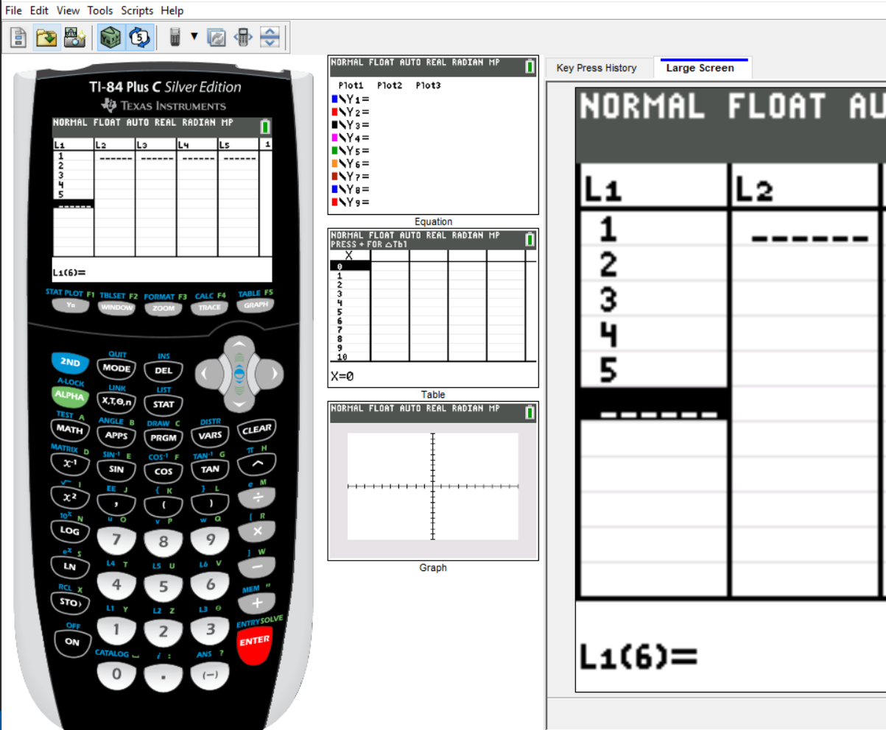
Fourth Step: Click the left arrow (left cursor) key so we can enter the y-values in $L_2$
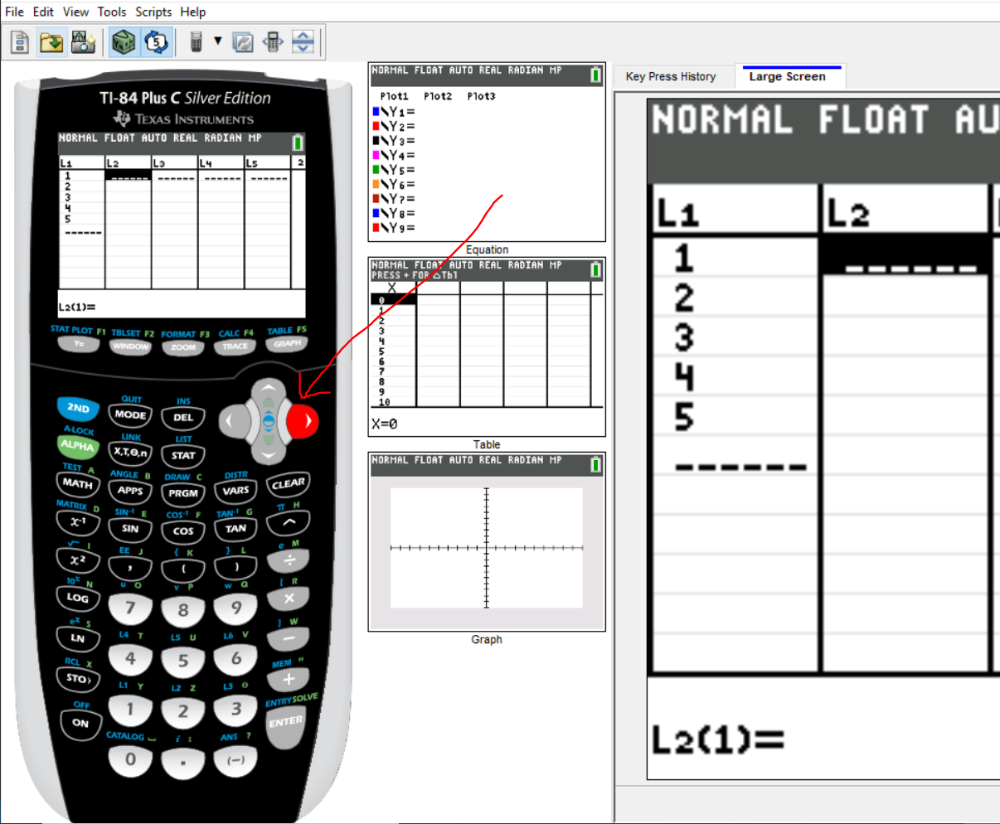
Fifth Step: Enter the y-values in the second list, $L_2$
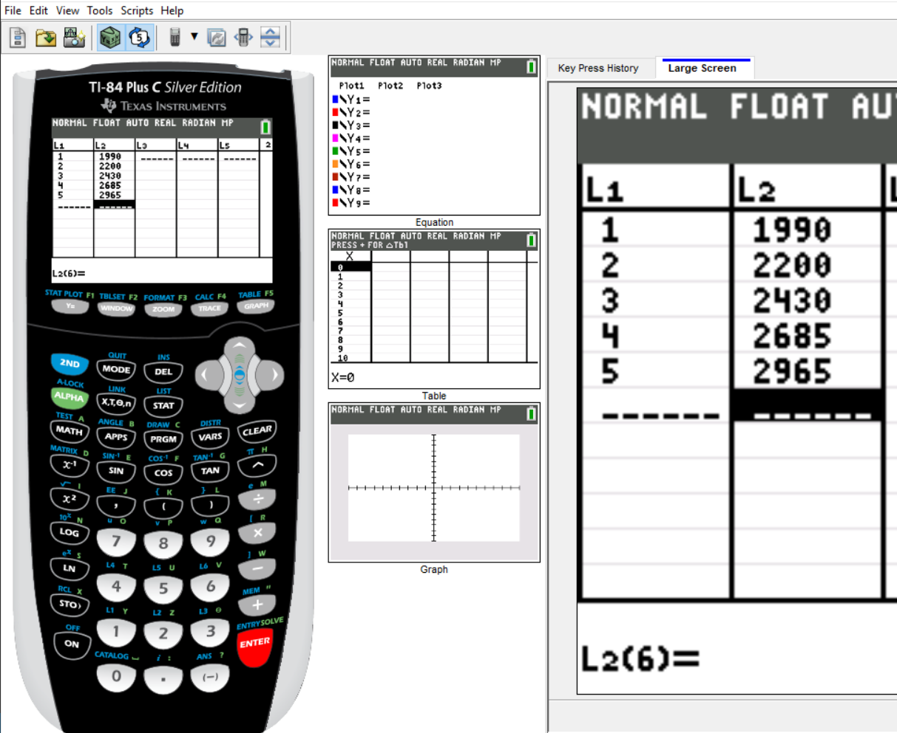
Sixth Step: Press the STAT key again
Then, move the cursor to the CALC menu by clicking the left arrow key
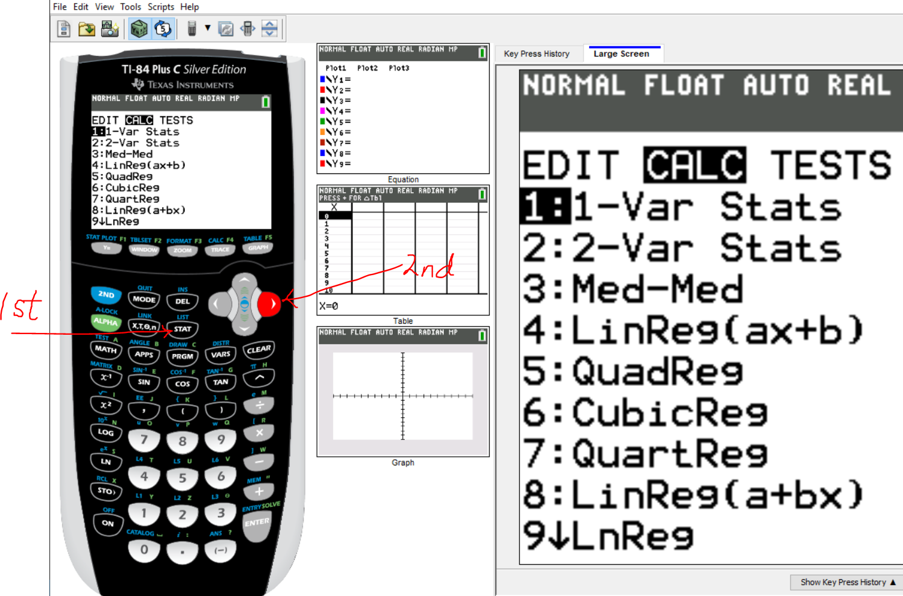
Seventh Step: The down arrow besides 9 signifies that there are more functions below
Click the down arrow key past number 9 until you see 0:ExpReg
Then, click the ENTER key
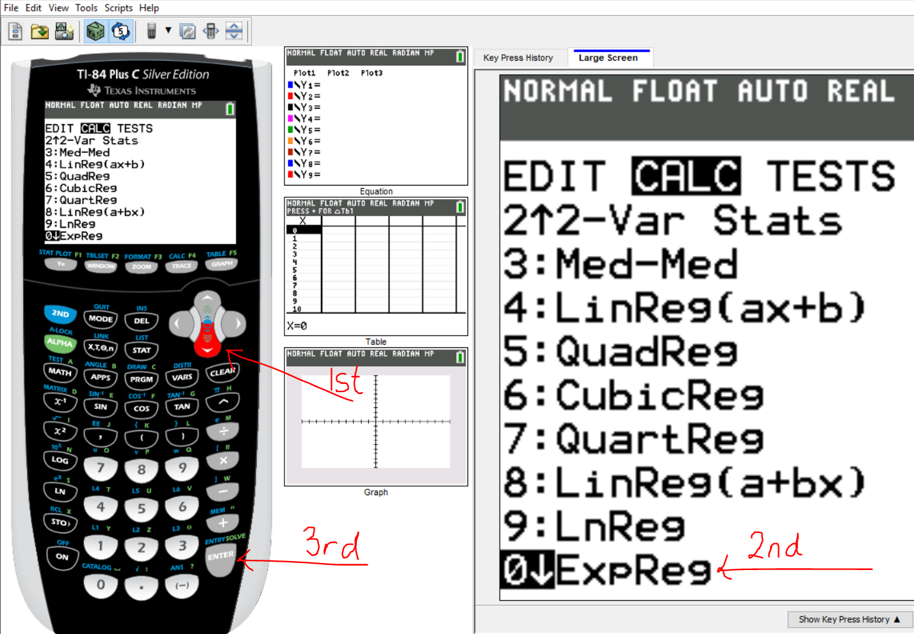
Eighth Step: Verify that: Xlist is $L_1$ Ylist is $L_2$
Click the down arrow key to move the cursor to Calculate, then press the ENTER key
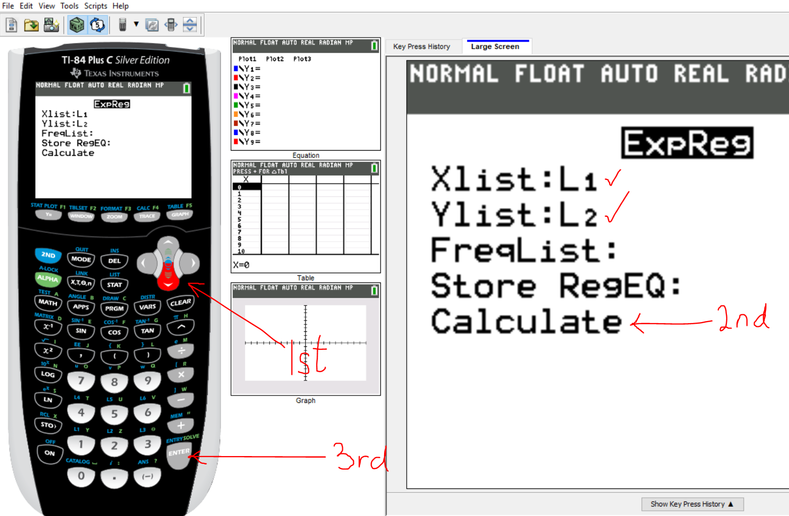
Ninth Step: The calculator displays the exponential function
Notice that it uses: $y = ab^x$ while I used $y = ap^x$ Remember what we discussed at the beginning of this section. It is just my preference.
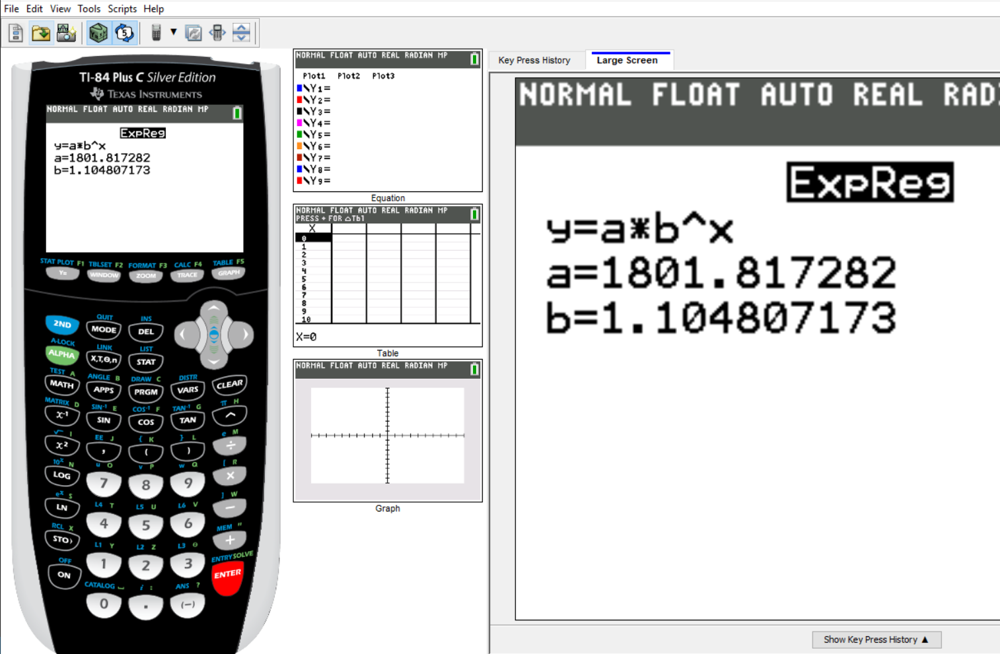
$
y = ab^x \\[3ex]
y = 1801.817282(1.104807173)^x \\[3ex]
$
Assuming this exponential trend continues, is it reasonable to expect at least 3500 bacteria at hour
7?
Justify your answer.
$
x = 7 \\[3ex]
y = 1801.817282(1.104807173)^7 \\[3ex]
y = 1801.817282(2.009117779) \\[3ex]
y = 3620.063135 \\[3ex]
y \approx 3621\;bacteria \\[3ex]
3620.063135 \ge 3500 \\[3ex]
$
Yes, it is reasonable to expect at least 3500 bacteria at hour 7
Third Approach: Using SamDom's Well-Programmed Exponential Models Calculator
A Logarithmic Function is a function of the form: $f(x) = \log_{p}{x}$ where:
$f(x)$ is the $y$: the dependent variable. It is a function of $x$
$x$ is the independent variable
$p$ is the base. It is a positive real number. This implies that $p \gt 0$
Typically, we have two basic cases of logarithmic functions.
All other logarithmic functions can be plotted by transforming the graphs of any of these two basic cases as
applicable.
The two basic cases are:
(1.) Case 1: the base is greater than 1. p > 0; p ≠ 1
(2.) Case 2: the base is between 0 and 1 (both ends excluded): 0 < p < 1
We have a special example of Case 1: where the base is the Euler number (also known as Napier's constant):
e
$
y = \log_{e}{x} \;\;\;OR\;\;\; y = \ln x \\[3ex]
where\;\;e \approx 2.718 \\[3ex]
$
Recall the Mathematics of Finance: Continuous Compound Interst when we derived the Euler number.
To draw the graph of any logarithmic function, we can:
(1.) Draw the Table of Values of the appropriate basic case and
Transform the graph of that basic case to the logarithmic function
(2.) Draw the Table of Values of the logarithmic function
(3.) Use a graphing calculator/software
Ask students to explain what would happen to the exponential function if:
(1.) the base is zero: $p = 0$
(2.) the base is one: $p = 1$
(3.) the base is negative: $p \lt 0$
Case 1:Base is greater than 1
Let us discuss some properties of the basic type of exponential function where the base is greater than 1.
Let us review the graphs of three functions:
$
y = \log_{2}{x} \\[3ex]
y = \log_3{x} \\[3ex]
y = \log {x} \\[3ex]
$
Ask students to write the Table of Values for each of the functions.
We already did the Table of Values for the first function in the Story (beginning of this topic)
The graphs of the functions are: (Notice the color represented by each graph)
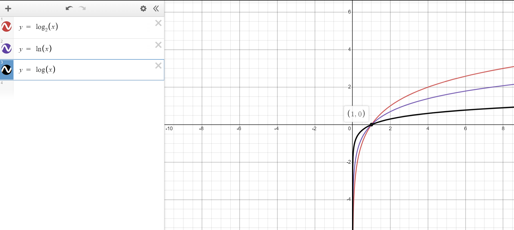
Properties of Logarithmic Functions (Case 1: Base is greater than 1)
(1.) Type of Function: One-to-one function: every input has a different output. Ask students to verify by reviewing the Table of Values for each function.
(2.) x-intercept: The x-intercept is (1, 0)
This is seen on the graph. It applies to all logarithmic functions where the base is greater than 1.
(3.) y-intercept: There is no y-intercept. Note: The y-intercept is not zero. There is simply no y-intercept. It DNE (does not exist).
(4.) Domain: Set Notation: $D = \{x | x \gt 0\}$
Interval Notation: $(0, \infty)$
The domain is set of real numbers greater than zero.
(5.) Range: Set Notation:
$R = \{y | y \in \mathbb{R}\}$
Interval Notation: $(-\infty, \infty)$
The range is the set of all real numbers.
(6.) Behavior of the Graph: The graph is increasing from zero to the right.
In other words, the graph is increasing in the domain from $(0, \infty)$
(7.) End Behavior of the Graph:
On the Right: As $x \rightarrow \infty$, $y \rightarrow \infty$
Also: As $x \rightarrow 0$, $y \rightarrow -\infty$
This implies that:
(8.) Vertical Asymptote: $x = 0$
In other words, the graph is asymptotic to the y-axis (the line $x = 0$) Ask students to verify by reviewing the Table of Values for each function for very small values of $x$
(as $x$ approaches zero)
(9.) Continuity: The graph is continuous.
No gaps, no holes, no breaks.
Case 2:Base is between 0 and 1 (Both ends not included)
Let us discuss some properties of the basic type of exponential function where the base is between 0 and 1
(both ends are excluded).
Let us review the graphs of three functions:
$
y = \log_{\left(\dfrac{1}{2}\right)}{x} \\[5ex]
y = \log_{\left(\dfrac{1}{4}\right)}{x} \\[5ex]
y = \log_{\left(\dfrac{1}{10}\right)}{x} \\[5ex]
$
Ask students to write the Table of Values for each of the functions.
We already did the Table of Values for the first function in the Story (beginning of this topic)
The graphs of the functions are: (Notice the color represented by each graph)
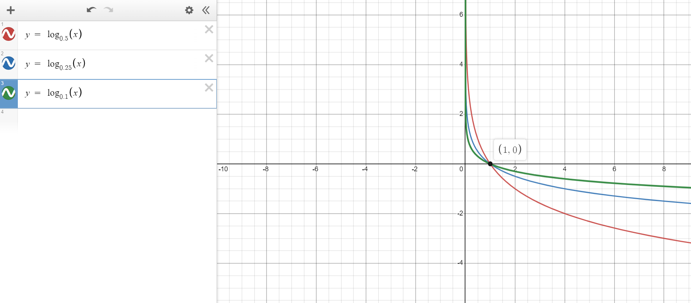
Properties of Logarithmic Functions (Case 2: Base is between 0 and 1) (Both ends excluded)
(1.) Type of Function: One-to-one function: every input has a different output. Ask students to verify by reviewing the Table of Values for each function.
(2.) x-intercept: The x-intercept is (1, 0)
This is seen on the graph. It applies to all logarithmic functions where the base is between 0 and 1.
(3.) y-intercept: There is no y-intercept. Note: The y-intercept is not zero. There is simply no y-intercept. It DNE (does not exist).
(4.) Domain: Set Notation: $D = \{x | x \gt 0\}$
Interval Notation: $(0, \infty)$
The domain is set of real numbers greater than zero.
(5.) Range: Set Notation:
$R = \{y | y \in \mathbb{R}\}$
Interval Notation: $(-\infty, \infty)$
The range is the set of all real numbers.
(6.) Behavior of the Graph: The graph is decreasing from zero to the right.
In other words, the graph is decreasing in the domain from $(0, \infty)$
(7.) End Behavior of the Graph:
On the Right: As $x \rightarrow \infty$, $y \rightarrow -\infty$
Also: As $x \rightarrow 0$, $y \rightarrow \infty$
This implies that:
(8.) Vertical Asymptote: $x = 0$
In other words, the graph is asymptotic to the y-axis (the line $x = 0$) Ask students to verify by reviewing the Table of Values for each function for very small values of $x$
(as $x$ approaches zero)
(9.) Continuity: The graph is continuous.
No gaps, no holes, no breaks.
Getting everything together (as a combo):
Ask students to compare and contrast the two cases.
A Logarithmic Model is a model of the form: $y = c + m\ln x$ where:
$y$ is the dependent variable. It is a function of $x$
$x$ is the independent variable
$c$ is the y-intercept
$m$ is the slope and $m \ne 0$. It is a positive real number.
If $m \gt 0$, the model increases.
If $m \lt 0$, the model decreases.
Given two sets of data that is related exponentially (similar to the data in the Story), how do we write the
exponential
function for the datasets?
In other words, how do we develop an exponential model for the datasets?
Given: Datasets X and Y (the data for the independent variable and the dependent
variable respectively)
We can develop a logarithmic model for a pair of dataset using at least two approaches.
(1.) By Formula
This is the most tedious approach. The steps are:
(a.) Calculate the values of $\ln x$
So, we have the two datasets as $\ln x$ and $y$ (rather than $x$ and $y$)
(b.) Assume a linear correlation between both datasets.
In other words, determine the Pearson correlation coefficient, $r$ of the datasets.
Then, compute the slope and y-intercept based on the Pearson correlation coefficient.
Then, write the slope-intercept form of the equation of a straight line: $y = mx + c$ but we shall be using
it as:
$y = m\ln x + c$ (Remember we replaced x as $\ln x$, $m$ is the slope and $c$ is the y-intercept)
This slope-intercept form is known as the Linear Regression equation
(also known as the Least-squares regression line or the Line of best fit)
The Linear Regression equation becomes the Logarithmic Regression equation.
(2.) By Technology
This is the widely used approach for several tests/examinations.
You may use:
(a.) TI-84/84 Plus Calculator
(b.) My well-programmed calculator (that gives the most accurate values):
Logarithmic Models Calculator
Use any approach you prefer.
Let us solve an example.
Example 2: Use the data below to find the logarithmic regression of COVID-19 cases in a specific region over
time.
Time (years)
COVID-19 Cases (thousands)
$1$
$578$
$10$
$456$
$20$
$341$
$30$
$222$
$40$
$160$
$50$
$100$
Select the correct answer:
$f(x) = -630 - 118\ln(x)$
$f(x) = 630x - 118\ln(x)$
$f(x) = 630 - 118\ln(x)$
$f(x) = 630 + 118\ln(x)$
First Approach: By Formula
First: Find and use $\ln x$ rather than $x$
Time (years), $x$
Time to use (years), $\ln x$
COVID-19 Cases (thousands), $y$
$1$
$0$
$578$
$10$
$2.302585093$
$456$
$20$
$2.995732274$
$341$
$30$
$3.401197382$
$222$
$40$
$3.688879454$
$160$
$50$
$3.912023005$
$100$
Second: Compute the Pearson linear correlation coefficient, slope, and y-intercept of the dataset:
$\ln x$ and
$y$
$
r = \dfrac{\Sigma \left(\dfrac{x - \bar{x}}{s_x}\right) \left(\dfrac{\ln y - \overline{\ln y}}{s_{\ln
y}}\right)}{n - 1}
\\[5ex]
= \dfrac{-4.656722741}{6 - 1} \\[5ex]
= -\dfrac{4.656722741}{5} \\[5ex]
= -0.9313445482 \\[5ex]
m = r * \dfrac{s_{y}}{s_{\ln x}} \\[5ex]
= -0.9313445482 * \dfrac{183.5448174}{1.447223251} \\[5ex]
= \dfrac{-170.943465}{1.447223251} \\[5ex]
= -118.1182412 \\[5ex]
c = \overline{y} - m\bar{\ln x} \\[3ex]
= 309.5 - (-118.1182412)(2.716736201) \\[3ex]
= 309.5 + 320.8961019 \\[3ex]
= 630.3961019 \\[3ex]
\underline{Logarithmic\;\;Regression\;\;Equation} \\[3ex]
y = c + m\ln x \\[3ex]
y = 630.3961019 + -118.1182412 \ln x \\[3ex]
y = 630.3961019 - 118.1182412 \ln x \\[3ex]
y \approx 630 - 118 \ln x
$
Second Approach: Using the TI-84/84 Plus Calculator
We shall use the x and y values as is
We shall not replace x-values with $\ln x$ values.
First Step: Press the STAT button/key
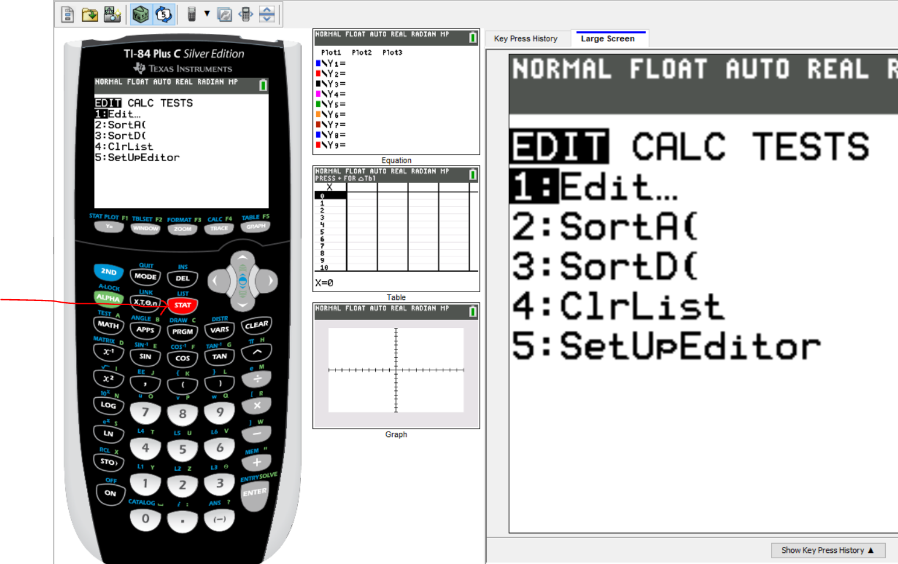
Second Step: Press 1 or the ENTER key
This is because we want to edit the list (table) to enter the x and y values
Because the cursor focus is already in number 1, you can either press the number 1 key right
away or if you wish,
press the ENTER key
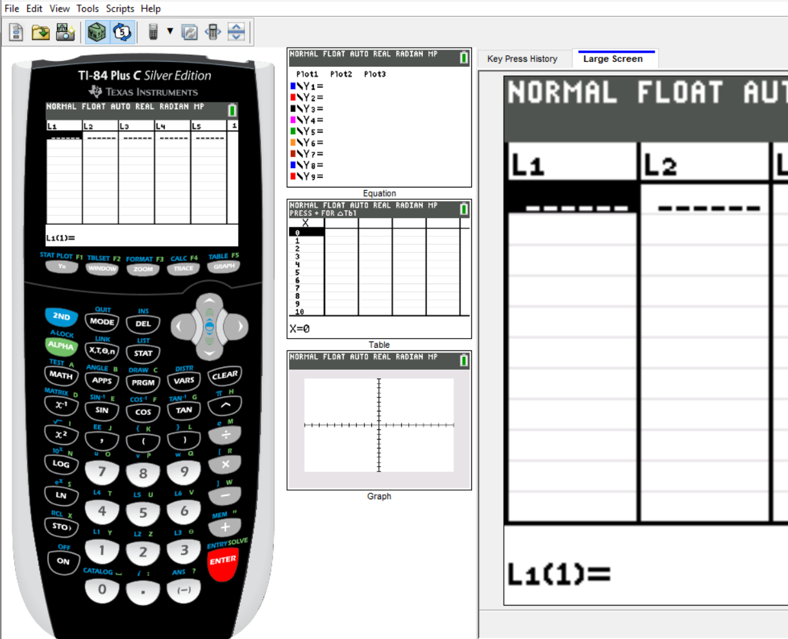
Third Step: Enter the x-values in the first list, $L_1$
After entering each value, press the ENTER key to enter the next value
Keep doing it until you enter the final x-value and press the ENTER key
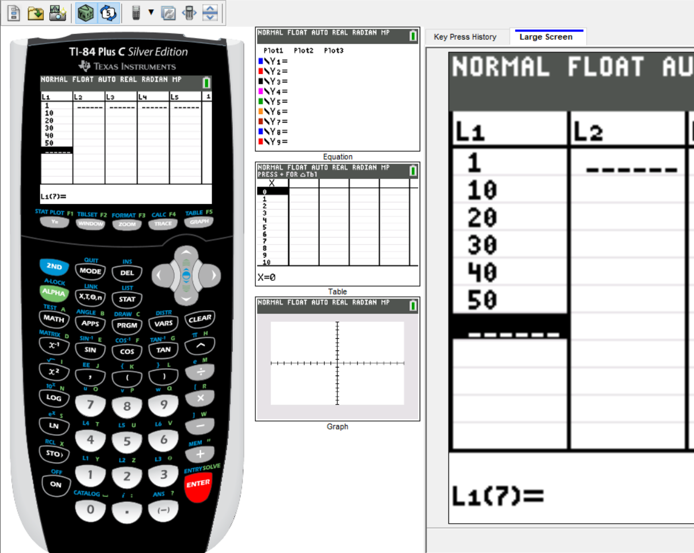
Fourth Step: Click the left arrow (left cursor) key so we can enter the y-values in $L_2$
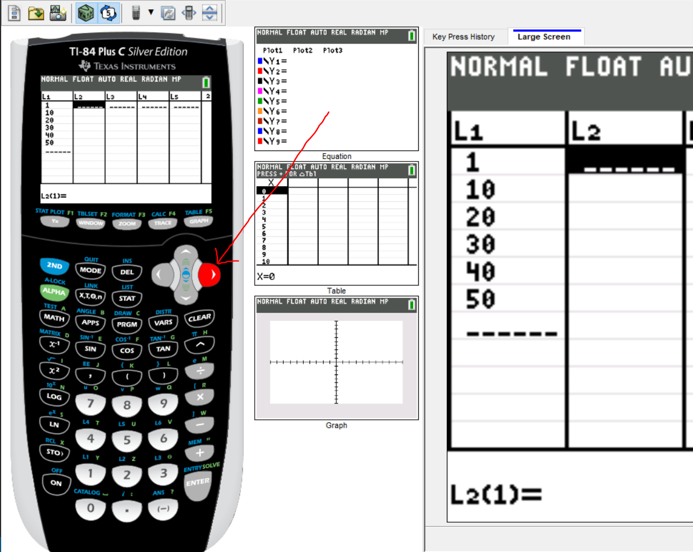
Fifth Step: Enter the y-values in the second list, $L_2$
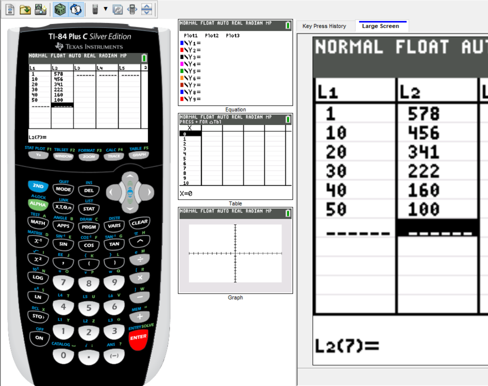
Sixth Step: Press the STAT key again
Then, move the cursor to the CALC menu by clicking the left arrow key
Seventh Step: We need the Number 9: Natural Logarithmic Regression (LnReg)
Press 9 key
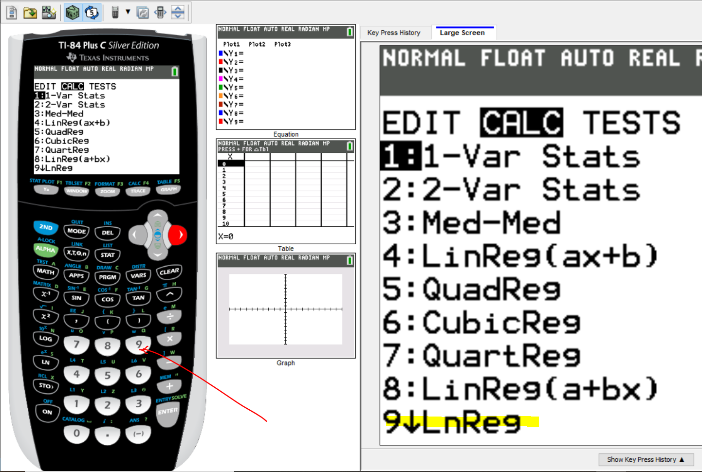
Eighth Step: Verify that: Xlist is $L_1$ Ylist is $L_2$
Click the down arrow key to move the cursor to Calculate, then press the ENTER key
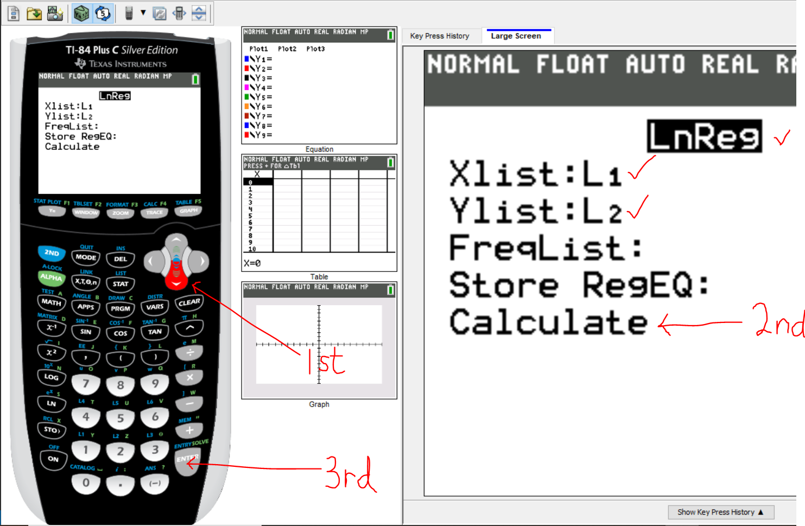
Ninth Step: The calculator displays the logarithmic function
Notice that it uses: $y = ab^x$ while I used $y = ap^x$ Remember what we discussed at the beginning of this section. It is just my preference.
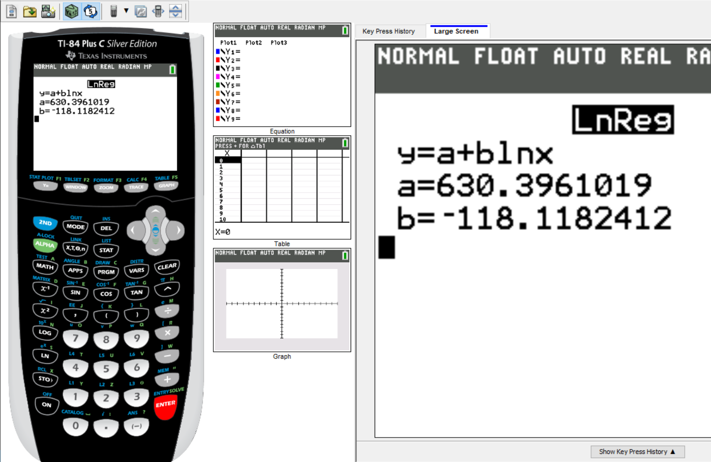
$
y = a + b\ln x \\[3ex]
a = 630.3961019 \\[3ex]
b = -118.1182412 \\[3ex]
\implies \\[3ex]
y = 630.3961019 + -118.1182412\ln x \\[3ex]
y = 630.3961019 - 118.1182412\ln x \\[3ex]
y \approx 630 - 118\ln x
$
Third Approach: Using SamDom's Well-Programmed Logarithmic Models Calculator
Coburn, J., & Coffelt, J. (2014). College Algebra Essentials (3rd ed.).
New York: McGraw-Hill
Kaufmann, J., & Schwitters, K. (2011). Algebra for College Students (Revised/Expanded ed.).
Belmont, CA: Brooks/Cole, Cengage Learning.
Lial, M., & Hornsby, J. (2012). Beginning and Intermediate Algebra (Revised/Expanded ed.).
Boston: Pearson Addison-Wesley.
Miller, J., O'Neill, M., & Hyde, N. (2022). Beginning & Intermediate Algebra.
McGraw Hill Education.
Sullivan, M., & Sullivan, M. (2017). Algebra & Trigonometry (7th ed.).
Boston: Pearson.
Alpha Widgets Overview Tour Gallery Sign In. (n.d.). Retrieved from http://www.wolframalpha.com/widgets/
Authority (NZQA), (n.d.). Mathematics and Statistics subject resources. www.nzqa.govt.nz. Retrieved December
14,
2020, from https://www.nzqa.govt.nz/ncea/subjects/mathematics/levels/
CrackACT. (n.d.). Retrieved from http://www.crackact.com/act-downloads/
CSEC Math Tutor. (n.d). Retrieved from https://www.csecmathtutor.com/past-papers.html
GCSE and SQA Exam Past Papers: Revision World. Retrieved April 6, 2020, from
https://revisionworld.com/gcse-revision/gcse-exam-past-papers
JAMB Past Questions, WAEC, NECO, Post UTME Past Questions. (n.d.). Nigerian Scholars. Retrieved February 12,
2022,
from https://nigerianscholars.com/past-questions/
K.C.S.E PAST PAPERS 1996 - 2021. (n.d.). Teacher.co.ke. Retrieved May 20, 2022, from
https://teacher.co.ke/k-c-s-e-past-papers-1996-2021/
Myschool e-Learning Centre - It's Time to Study! - Myschool. (n.d.). https://myschool.ng/classroom
Papua New Guinea: Department of Education. (n.d.). www.education.gov.pg.
https://www.education.gov.pg/TISER/exams.html
Past Exam Papers | MEHA. (n.d.). Retrieved May 6, 2022, from http://www.education.gov.fj/exam-papers/
School Curriculum and Standards Authority (SCSA): K-12. Past ATAR Course Examinations. Retrieved December
10, 2020,
from https://senior-secondary.scsa.wa.edu.au/further-resources/past-atar-course-exams
Search | Pearson Qualifications. (n.d.). Qualifications.pearson.com. Retrieved May 10, 2022, from
https://qualifications.pearson.com/en/search.html
TI-SmartViewTM Emulator Software for the TI-84 Plus Family - Texas Instruments - US and Canada. (n.d.).
Education.ti.com. Retrieved May 6, 2022, from
https://education.ti.com/en/software/details/en/ffea90ee7f9b4c24a6ec427622c77d09/sda-ti-smartview-ti-84-plus?msclkid=2fac6524cfb511ecbc87bf63a9cac91b
West African Examinations Council (WAEC). Retrieved May 30, 2020, from
https://waeconline.org.ng/e-learning/Mathematics/mathsmain.html
51 Real SAT PDFs and List of 89 Real ACTs (Free) : McElroy Tutoring. (n.d.).
Mcelroytutoring.com. Retrieved December 12, 2022,
from
https://mcelroytutoring.com/lower.php?url=44-official-sat-pdfs-and-82-official-act-pdf-practice-tests-free